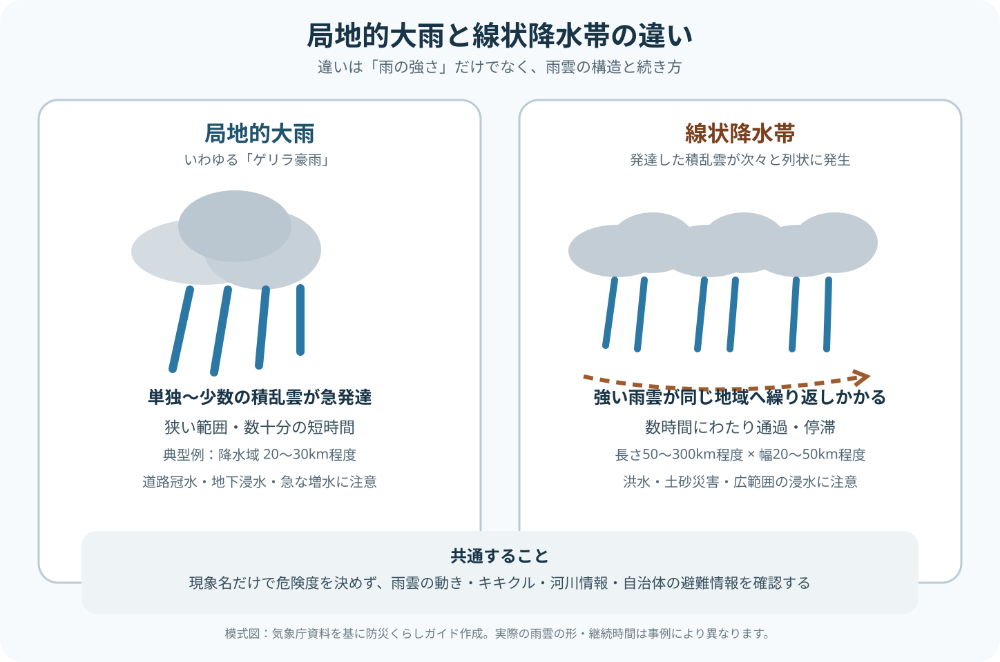

結論：違うのは「雨の強さ」より雨雲の構造と続き方
局地的大雨でも1時間に非常に激しい雨になることがあり、線状降水帯だから必ず1時間雨量が上回るわけではありません。大きな違いは、積乱雲が単独・少数で急発達して短時間に降るのか、積乱雲が次々と発生して線状に組織化し、同じ地域へ強雨を繰り返すのかです。
気象庁の用語では、局地的大雨は「急に強く降り、数十分の短時間に狭い範囲に数十mm程度の雨量をもたらす雨」です。線状降水帯は、長さ50〜300km程度、幅20〜50km程度の線状の雨域が、数時間にわたりほぼ同じ場所を通過または停滞する現象とされています。
図で見る：局地的大雨と線状降水帯

下の図は典型的な違いを模式化したものです。実際の雨雲の形や継続時間は事例ごとに異なり、図だけで安全・危険を判断するものではありません。
比較表：範囲・時間・予測・被害の違い
| 比較項目 | 局地的大雨（いわゆるゲリラ豪雨） | 線状降水帯 |
|---|---|---|
| 気象庁の正式な扱い | 「ゲリラ豪雨」は正式用語ではなく、主に「局地的大雨」等を使用 | 「線状降水帯」として定義・防災情報を運用 |
| 主な雨雲 | 単独または少数の積乱雲が急発達 | 発達した積乱雲が次々に発生し列状に組織化 |
| 典型的な範囲 | 狭い範囲。気象庁監修教材では一つの降水域が20〜30km程度の例を説明 | 長さ50〜300km程度、幅20〜50km程度 |
| 継続 | 数十分程度の短時間が中心 | 数時間にわたり同じ場所を通過・停滞 |
| 雨量の特徴 | 短時間に数十mm、場合によっては1時間100mm程度の猛烈な雨 | 強雨が繰り返され、3時間・24時間・総雨量が大きくなりやすい |
| 起こりやすい被害 | 道路冠水、地下空間への浸水、中小河川・水路の急増水、落雷など | 河川氾濫、土砂災害、広範囲の浸水、道路寸断など |
| 予測・確認 | 発生場所・時刻の正確な事前予測が難しい。雨雲の動き・ナウキャストを活用 | 半日前予測、直前予測、発生情報がある。ただし予測どおり発生するとは限らない |
| 防災上の注意 | 「さっきまで晴れていた」状態からの急変に注意 | すでに降った雨の蓄積、河川水位、土砂災害危険度の上昇に注意 |
この表は典型的な特徴を比較したものです。局地的大雨でも重大な浸水や事故は起こりますし、線状降水帯が発生していなくても災害級の大雨になることがあります。 現象名だけで危険度を決めないことが重要です。
「ゲリラ豪雨」は気象庁の正式用語ではない
テレビやニュースでは「ゲリラ豪雨」という表現が広く使われますが、気象庁の予報用語ではありません。気象庁の用語集では「ゲリラ豪雨」を使わず、「局地的大雨」「集中豪雨」などを使うよう整理されています。
このサイトでは検索者が理解しやすいよう「ゲリラ豪雨」という語も使いますが、本文では原則として「局地的大雨（いわゆるゲリラ豪雨）」と表記します。
局地的大雨は単独の積乱雲が発達して起きることがあり、大雨警報が発表されるような広域の気象状態でなくても、河川・水路の急増水や都市部の内水氾濫を起こす場合があります。
局地的大雨は「短時間だから安全」ではない
局地的大雨では、強い雨が長時間続かなくても、短い時間に排水能力を超える雨が集中すると道路や地下空間が急速に浸水することがあります。中小河川や水路では、上流・周辺の雨によって短時間に水位が変化することもあります。
特に都市部では、低い道路、アンダーパス、地下駅、地下街、地下駐車場、半地下住宅などに水が集まりやすくなります。雨が急に強まった場合は、雨雲の動き、高解像度降水ナウキャスト、キキクルを確認し、冠水した場所へ近づかないことを優先します。
また、気象庁の「記録的短時間大雨」は、数年に一度程度しか発生しないような短時間の大雨を観測・解析した場合に発表されます。これは線状降水帯とは別の情報であり、局地的大雨でも発表されることがあります。
線状降水帯は「強い雨雲が次々に来る」ことが特徴
線状降水帯では、発達した積乱雲が列をなし、風上側などで新しい積乱雲が次々と発生・発達します。そのため、一つの積乱雲の寿命を超えて、ほぼ同じ地域に強い雨が繰り返しかかります。
気象庁は、線状降水帯を長さ50〜300km程度、幅20〜50km程度の線状に伸びる強い降水域として説明しています。数時間にわたり同じ場所で強い雨が続くことで、短時間雨量だけでなく3時間雨量や24時間雨量、総雨量も大きくなる可能性があります。
土砂災害ではそれまでに降った雨が地中へ蓄積し、河川では上流の降雨が時間差で下流の水位に影響します。そのため、雨脚が一時的に弱くなっても「危険が終わった」と判断しないことが重要です。
線状降水帯には半日前・直前・発生の情報がある
2026年現在、気象庁は線状降水帯について、半日前予測、直前予測、発生情報を運用しています。
半日前予測は、線状降水帯による大雨の可能性がある程度高い場合に、半日程度前から注意を呼びかけます。直前予測は、発生の2〜3時間前を目標とした情報です。発生情報は、実際に線状降水帯が発生し、災害発生の危険度が急激に高まっている状況を知らせます。
ただし、予測が出たから必ず線状降水帯が発生する、予測が出なかったから大雨にならない、という意味ではありません。 実際の避難判断では線状降水帯情報だけでなく、キキクル、河川情報、自治体の避難情報を組み合わせます。
「記録的短時間大雨」と「線状降水帯発生」は別の情報
混同しやすいのが、記録的短時間大雨に関する情報と線状降水帯に関する情報です。
記録的短時間大雨は、その地域で数年に一度程度しか発生しないような短時間の猛烈な雨が観測・解析され、災害危険度も高まっていることを知らせる情報です。一方、線状降水帯の発生情報は、強雨域の形状、3時間降水量、危険度など複数の基準を満たす線状降水帯が発生していることを伝えます。
したがって、記録的短時間大雨情報が出ても線状降水帯とは限らず、線状降水帯が発生したときに必ず同じ場所で記録的短時間大雨情報が出るとも限りません。
どちらが危険？「線状降水帯の方が上」とは決められない
一般に線状降水帯は強い雨が長時間続きやすく、総雨量が増えるため、広域の洪水・土砂災害など甚大な災害につながる危険があります。しかし、防災上は現象名だけで危険度を序列化しない方が安全です。
局地的大雨でも、1時間100mm前後の猛烈な雨が都市部に集中すれば、駅・道路・地下空間の冠水、中小河川の急増水など大きな被害が起こります。逆に、線状降水帯という情報が出ていても、自分の現在地の危険度は地域によって異なります。
見るべきなのは「ゲリラ豪雨か線状降水帯か」だけではなく、今いる場所で浸水・洪水・土砂災害の危険度がどこまで上がっているかです。
雨が急に強くなったときに確認する情報
突然の強雨でも線状降水帯でも、最終的な行動判断は共通しています。
- 雨雲の動き・高解像度降水ナウキャストで、目先の強雨を確認する
- キキクルで土砂災害・浸水害・洪水の危険度を現在地まで絞る
- 国や都道府県の河川情報で水位・氾濫情報を確認する
- 自治体の避難情報を確認する
- 冠水道路、アンダーパス、川・用水路、がけ・斜面へ様子を見に行かない
特に局地的大雨では雨が強まってから状況が急変しやすいため、移動中なら低い道路や地下空間へ入る前に立ち止まる判断が重要です。線状降水帯では、すでに数時間雨が続いている地域ほど、河川・斜面の危険度の蓄積を重視します。
東京・名古屋の事例を見ると違いが分かりやすい
東京では、伊豆諸島で線状降水帯の実発生事例がある一方、23区周辺では線状降水帯でなくても1時間100mm級の局地的大雨が都市型浸水を起こしています。名古屋でも、線状降水帯を伴った2026年9月8日の大雨だけでなく、2008年8月末豪雨や2013年9月の局地的集中豪雨で大きな浸水被害が発生しています。
具体的な雨量・観測史上順位・被害は、東京都の線状降水帯・大雨事例と愛知県の線状降水帯・名古屋の大雨事例で確認できます。
まとめ：名前より「今どこが危険か」を見る
- 「ゲリラ豪雨」は正式な気象庁用語ではなく、この記事では主に局地的大雨を指して説明する
- 局地的大雨は、単独・少数の積乱雲による狭い範囲の短時間強雨が典型
- 線状降水帯は、積乱雲が次々に発生・組織化し、線状の雨域が数時間続く
- 局地的大雨でも都市型浸水や急な増水など重大な被害が起こる
- 線状降水帯には半日前予測・直前予測・発生情報があるが、予測の有無だけで安全判断しない
- 現象名より、キキクル・河川情報・自治体の避難情報で現在地の危険度を確認する
関連ページ
公的情報・参考資料
- 気象庁「降水に関する用語」 https://www.jma.go.jp/jma/kishou/know/yougo_hp/kousui.html
- 気象庁「線状降水帯に関する情報」 https://www.jma.go.jp/jma/kishou/know/bosai/kishojoho_senjoukousuitai.html
- 気象庁「予報が難しい現象について（線状降水帯による大雨）」 https://www.jma.go.jp/jma/kishou/know/yohokaisetu/senjoukousuitai_ooame.html
- 気象庁「気象防災速報（記録的短時間大雨）」 https://www.jma.go.jp/jma/kishou/know/bosai/kirokuame.html
- 気象庁「防災気象情報とその効果的な利用」 https://www.jma.go.jp/jma/kishou/know/ame_chuui/ame_chuui_p8.html
- 気象庁監修『図解説 中小規模気象学』 https://www.jma.go.jp/jma/kishou/know/expert/pdf/textbook_meso_v2.1.pdf